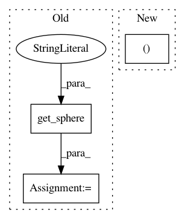

cf98e07258141202387f84d4578b4232700caa21,dipy/reconst/dandelion.py,SphericalDandelion,__init__,#SphericalDandelion#Any#Any#Any#Any#Any#Any#,14
Before Change
"""
if odfsphere == None:
eds=np.load(get_sphere("symmetric362"))/먚
else:
eds=odfsphere
// e.g. odfsphere = evenly_distributed_sphere_642.npz
After Change
----------
dipy.reconst.dti.Tensor, dipy.reconst.gqi.GeneralizedQSampling
"""
odf_vertices, odf_faces = sphere_vf_from(odf_sphere)
self.odf_vertices=odf_vertices
self.bvals=bvals
In pattern: SUPERPATTERN
Frequency: 4
Non-data size: 3
Instances
Project Name: nipy/dipy
Commit Name: cf98e07258141202387f84d4578b4232700caa21
Time: 2011-02-09
Author: matthew.brett@gmail.com
File Name: dipy/reconst/dandelion.py
Class Name: SphericalDandelion
Method Name: __init__
Project Name: nipy/dipy
Commit Name: 6c524d66dcd30d98a0f0c991252a3be644fa58ef
Time: 2013-09-11
Author: stjeansam@gmail.com
File Name: doc/examples/compute_SNR_in_corpus_callosum.py
Class Name:
Method Name:
Project Name: nipy/dipy
Commit Name: cf7d0bdc4133ea3248e054fa93aa2b5a6f8f2fca
Time: 2013-09-11
Author: stjeansam@gmail.com
File Name: doc/examples/compute_SNR_in_corpus_callosum.py
Class Name:
Method Name:
Project Name: nipy/dipy
Commit Name: cf98e07258141202387f84d4578b4232700caa21
Time: 2011-02-09
Author: matthew.brett@gmail.com
File Name: dipy/reconst/gqi.py
Class Name: GeneralizedQSampling
Method Name: __init__